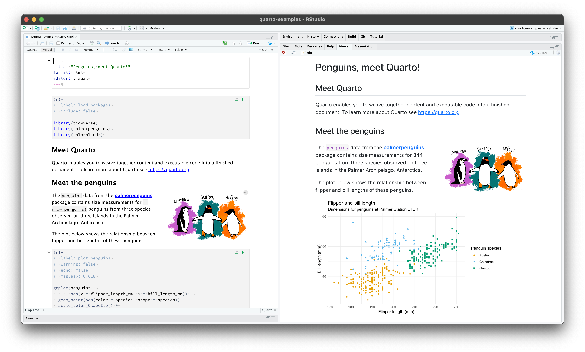
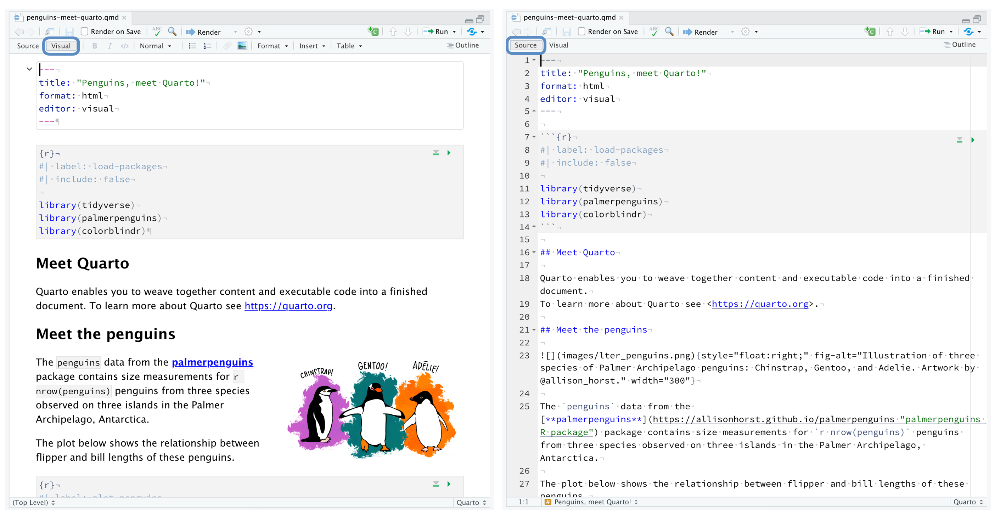
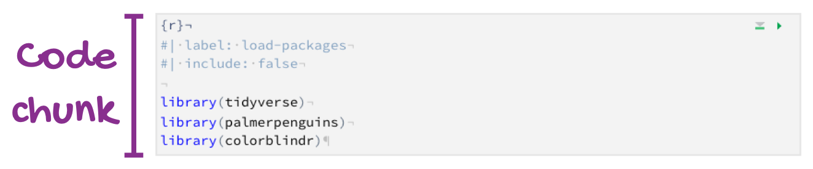
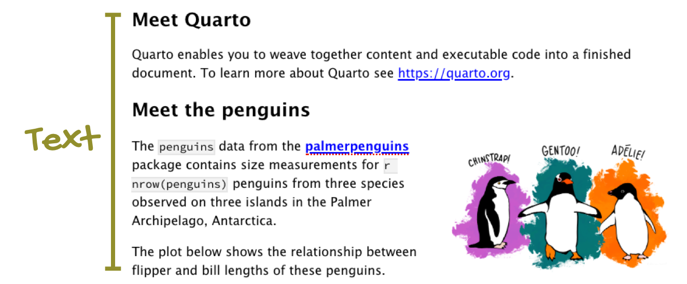
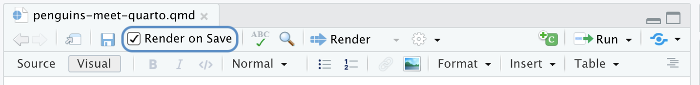
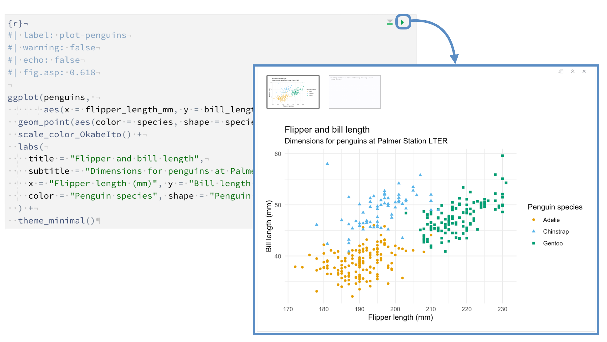

quarto::quarto_render()How it works
This is a Quarto file with the extension .qmd. You can open it here on RStudio Cloud.

The source code (on the left) looks very similar to the rendered output (on the right) since we are viewing the file in the visual editor. Switching to the source editor reveals the plain text source code underlying the document.

Notice that the file contains three types of content:
- An (optional) YAML header surrounded by fences comprised of three dashes (
---):
- R code chunks identified with
{r}with (optional) chunk options, in YAML style, identified by#|at the beginning of the line:

- Text with formatting, including section headers, hyperlinks, an embedded image, and an inline code chunk:

Rendering output
Use the (Render) button in the RStudio IDE to render the file and preview the output with a single click or keyboard shortcut (⇧⌘K).
If you prefer to automatically render whenever you save you can check the Render on Save option on the editor toolbar. The preview will update whenever you re-render the document. Side-by-side preview works for both HTML and PDF outputs.

When rendering, Quarto generates a new file that contains selected text, code, and results from the .qmd file. The new file can be an HTML, PDF, MS Word document, presentation, website, book, interactive document, or other format.
You can also render the document using the functions from the quarto package, which provides an R interface to the Quarto CLI:
Notebook interface
When you open the file in the RStudio IDE, it becomes a notebook interface for R. You can run each code chunk by clicking the  icon. RStudio executes the code and displays the results either inline within your file or in the Console.
icon. RStudio executes the code and displays the results either inline within your file or in the Console.

How it works
When you render a Quarto document, first knitr executes all of the code chunks and creates a new markdown (.md) document which includes the code and its output. This markdown file generated is then processed by pandoc, which creates the finished format. The Render button encapsulates these actions and executes them in the right order for you.